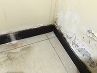
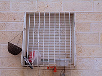
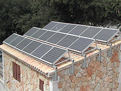
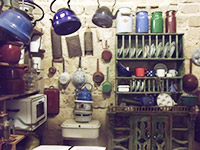
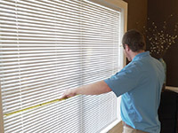
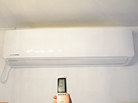
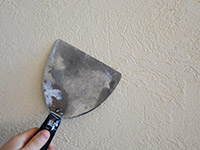

פה חשדתי - סימני אזהרה
תהליך חיפוש הדירה ארוך ומבלבל, בין בחירת השותפים, לבחירת הדירה וליחסים עם בעל הבית, צריך לשים לב לכמה דברים חשובים. מה צריך להדליק לכם "נורת אזהרה"?
בדירה
צנרת ואינסטלציה
חפשו סימני רטיבות, הפעילו את ברזי המים, בדקו ריקבון בקירות, לחץ מים. מומלץ לבדוק בעזרת בעל מקצוע.
-
סורגים ומנעולים
בדקו את סוגי המנעולים שעל הדלתות, ודאו שהם בטיחותיים ולא קלים לפריצה. ניתן להתייעץ עם מנעולן.
 -
דוד שמש/חשמל
בדקו אם יש לבניין דוד משותף או שיש דוד ששייך רק לדירה. בדקו את תקינות הדוד.
 -
מטבח
בדקו את ארונות מטבח לראות שהם תקינים ולא רקובים, גז תקין, שקעי חשמל לפי הצורך שלכם.
 -
תאורה
בדקו שהתאורה תקינה ומספיקה בכל החללים בבית.
תמונה של שתי מנורות להמחשבה"/> -
תריסים וחלונות
בדקו האם התריסים שלמים ותקינים.
 -
מזגן
ודאו שהמזגן עובד ואין תקלות.
 -
סיוד
בדקו האם יש אזורים בדירה שזקוקים לסיוד
 -
ריצוף
בדקו שאין מרצפות שבורות
בואו נרחיב, צפו בסרטון של קוד השכירות:
לחצו כאן למעבר לאתר של פרויקט קוד השכירות >
דגשים חשובים
חוזה שכירות
-
יש לציין בחוזה הדירה מי אחראי לתיקון הציוד בדירה (כמו מזגן, צנרת, דוד, מקרר וכו') ומהו מקסימום משך הזמן עד לביצוע התיקון (לדוגמא: עד 48 שעות).
-
סעיף "למעט מום או בלאי נסתרים" בחוזה (פגמים שהשוכר לא יכול היה לשים לב אליהם, כמו צנרת רקובה) נועד למנוע מצב שבו בעל הדירה יסרב לבצע את התיקון הנדרש. אם לא יהיה סעיף זה בחוזה, כל דבר לא תקין שאתם לא תראו בהתחלה עלול לשמש נגדכם בעתיד.
-
חשוב לציין - בדר"כ בעל הדירה אחראי לתיקונים, אך חובתו של הדייר לדאוג לתחזוקה השוטפת.
כללי
-
חשוב לברר את שנת הבנייה. מבנים שנבנו עד שנות ה-70 אינם עומדים בתקן בטיחות ומבנה ישן בדר"כ ידרוש תחזוקה גבוהה יותר ומחיר השכירות צריך להיות בהתאם.
-
דרשו הדברה וניקוי לפני הכניסה לדירה.
-
בדקו איזה ריהוט ואילו מכשירים חשמליים נשארים בדירה ואיזה דברים אתם צריכים לקנות.
-
הגיעו לדירה עם מישהו שייתן חוות דעת שניה ואולי יבחין בליקויים שאתם התעלמתם מהם.
סביבת הדירה
-
סופרמרקט
חשוב לבדוק אם יש סופר בקרבת מקום בשביל הנוחות שלכם.
-
תחבורה ציבורית
וודאו כי יש באזור הדירה תחבורה ציבורית המתאימה לצרכים שלכם
-
קופת חולים
וודאו כי אתם יכולים לקבל שירותי רפואה בקרבת הדירה.
-
מטרדי רעש
בקרו באזור הדירה בשעות שונות של היום ובדקו האם יש מטרדי רעש.
-
בעלי רכב
בדקו מהו הקושי למצוא חניה באזור הדירה, בעיקר בשעות העומס.
שותפים
-
מין השותפים
חשוב שתשאלו את עצמכם עם איזה מין אתם מסתדרים יותר טוב ועם איזה מין יש לנו נושאי שיחה משותפים.

-
מספר השותפים
יותר שותפים זה עלות נמוכה יותר בשכירות אבל איכות החיים יורדת בהתאם. תחשבו מהו מספר שותפים שעליו אתם מוכנים להתפשר.
-
אורח חיים
חישבו מה הוא אורך החיים שלכם (ברמנית שעובדת לילות או סטודנט) ווודאו שהשותפים שלכם מתאימים לאורך החיים שלכם.
-
תכונות
חישבו מה מפריע לכם, עם איזה אנשים תסתדרו בצורה טובה ואילו תכונות חשוב לכם שיהיו לשותפים (יושרה, פתיחות וכד').
-
גבולות
בדקו מה היא עמדתכם בנושאים שונים כמו- עישון, בעלי חיים, הרגלי ניקיון, כשרות ועוד דברים שיהוו עבורכם קו אדום.
-
גיל השותפים
בנוסף לאורח חיים דומה, בחרו בשותף בגיל דומה לשלכם. פערי גילאים משמעותיים יכולים ליצור בעיות וחיכוכים.
-
בני זוג
בדקו האם לשותפים שלכם יש בני זוג, מה התדירות שהם נמצאים בדירה.
שאלות שכדאי לשאול שותפים פוטנציאלים
איך נראה יום טיפוסי שלך?
במה את\ה עוסק? האם יש לך עיסוקים נוספים או תחביבים?
האם יש לך בן\בת זוג והאם אתם מבלים הרבה בדירה?
האם השותפים בדירה נוהגים לארח חברים לעיתים קרובות?
האם יש לך מקור הכנסה יציב כדי לשלם את שכר הדירה?
בעל\ת הדירה
אחרי שסיימתם לבחון את הדירה עצמה, צריך לבדוק גם אם בעל הדירה מתאים לכם!
הנה כמה נקודות חשובות שאתם צריכים לשים לב אליהן:
האם משכיר הדירה הוא אכן בעל הדירה או מיופה כוח מטעמו ע"י נוסח הטאבו
אופן ביצוע התשלומים: מראש או כל חודש
האם המשכיר נראה אמין
האם המשכיר מגיע לביקורים בדירה בהפתעה ובלי הודעה מראש
באיזה תדירות מתחלפים הדיירים בדירה ולמה
האם הוא מבצע תיקונים דרושים במהירות או שהוא לוקה ב"סחבת"
האם בעל הדירה מתגורר קרוב לדירה
איך האופי והרושם הראשוני שלו: האם הוא נראה נחמד והאם נוח לדבר אתו ולשאול שאלות
מומלץ לדבר עם דיירים קודמים ושכנים כדי לשמוע מהם על בעל הדירה. כאשר תפגשו את בעל הדירה, יכול להיות שהוא ישאל שאלות לא רלוונטיות. זכרו, מדובר בנכס שלו וחשוב לו לדעת מי עתיד לגור בו (כמובן כאשר אלו שאלות על גבול הטעם הטוב).